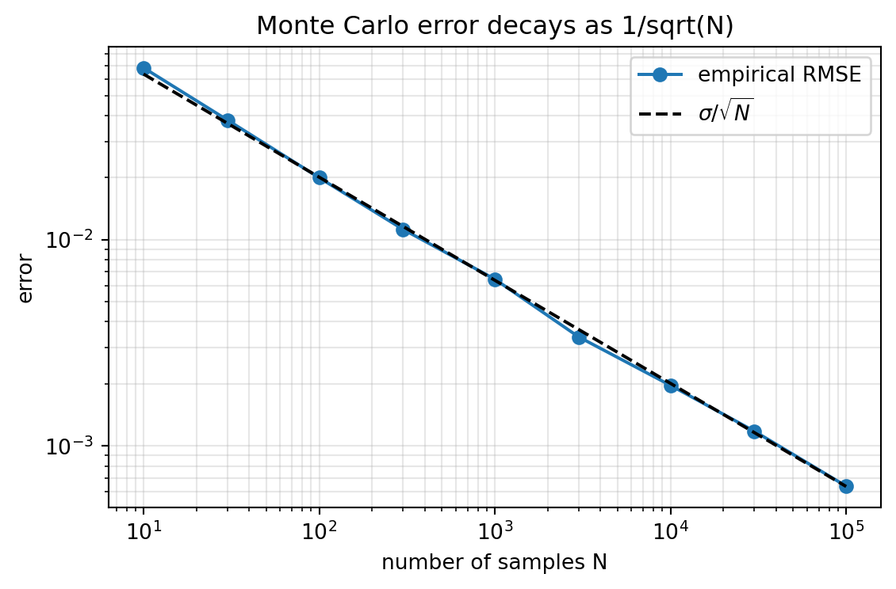

Integration is the mathematical machinery that turns local quantities into global ones. It accumulates, it averages, and it measures. For machine learning, integration is not an abstract curiosity but the operational core of probability. Every expectation, every marginal likelihood, every Bayesian posterior, and every loss averaged over a data distribution is an integral. This chapter builds integration from two complementary pictures, area and accumulation, ties those pictures together through the fundamental theorem of calculus, extends them to many dimensions, and then reframes the entire apparatus in the language of expectations. The chapter closes with Monte Carlo estimation, the sampling-based technique that makes intractable high-dimensional integrals computable and that underlies much of modern deep learning.
29.1 1. The Integral as Area and as Accumulation
29.1.1 1.1 Two Pictures of the Same Object
There are two intuitions for the definite integral, and holding both at once is the key to fluency. The first is geometric. Given a function \(f\) on an interval \([a, b]\), the integral
\[
\int_a^b f(x)\, dx
\]
is the signed area between the graph of \(f\) and the horizontal axis. Regions above the axis count positively, regions below count negatively. This is the picture most people learn first, and it is useful for building visual intuition about magnitude and sign.
The second intuition is dynamic. If \(f(x)\) represents a rate at which some quantity changes, then the integral represents the total accumulated change. If \(f\) is a velocity, the integral is displacement. If \(f\) is a probability density, the integral over a region is the probability mass in that region. If \(f\) is a power draw measured in watts, the integral over time is energy consumed. The accumulation picture is the one that generalizes most cleanly to probability and to machine learning, where we constantly accumulate contributions across a domain.
29.1.2 1.2 The Riemann Construction
To make either picture precise we need a definition that does not appeal to intuition about area. The Riemann integral does this by approximation. Partition \([a, b]\) into \(n\) subintervals with endpoints \(a = x_0 < x_1 < \cdots < x_n = b\). On each subinterval choose a sample point \(x_i^*\) and form the Riemann sum
Each term is the area of a thin rectangle of height \(f(x_i^*)\) and width \(\Delta x_i\). Write the mesh of the partition as \(\|\Delta\| = \max_i \Delta x_i\), the width of the widest subinterval. As the partition becomes finer, meaning \(\|\Delta\| \to 0\), these sums converge to a single number for any function that is well behaved enough, such as any continuous function. The function \(f\) is called Riemann integrable on \([a, b]\) when there exists a number \(I\) such that for every tolerance \(\varepsilon > 0\) there is a mesh \(\delta > 0\) with
A useful refinement is to bound the sum from below and above. On each subinterval let \(m_i = \inf_{[x_{i-1}, x_i]} f\) and \(M_i = \sup_{[x_{i-1}, x_i]} f\), giving the lower and upper Darboux sums \(L(f, \Delta) = \sum_i m_i \Delta x_i\) and \(U(f, \Delta) = \sum_i M_i \Delta x_i\). Every Riemann sum is squeezed between them, \(L(f, \Delta) \le S_n \le U(f, \Delta)\), and integrability is exactly the statement that the gap \(U(f, \Delta) - L(f, \Delta)\) can be made arbitrarily small. Continuity on a closed bounded interval forces this gap to close, which is why every continuous function is integrable.
The notation itself encodes the construction. The integral sign is an elongated S for sum, and \(dx\) is the infinitesimal residue of the width \(\Delta x\). The Riemann sum is worth remembering not only as a definition but as an algorithm, because it is exactly how a computer evaluates a one-dimensional integral by numerical quadrature, and it is the conceptual ancestor of Monte Carlo estimation discussed later.
29.1.3 1.3 Basic Properties
Three properties follow directly from the construction and are used constantly. Integration is linear,
so a domain can always be split into pieces. And monotonicity holds, meaning if \(f(x) \le g(x)\) everywhere on \([a, b]\) then the integral of \(f\) does not exceed the integral of \(g\). Linearity in particular is the property that lets us push expectations through sums, which is the workhorse identity in the analysis of estimators.
29.2 2. The Fundamental Theorem of Calculus
29.2.1 2.1 Differentiation and Integration as Inverses
The fundamental theorem of calculus is the bridge that connects the two great operations of analysis. It comes in two parts. The first part says that integration produces an antiderivative. Define the accumulation function
\[
F(x) = \int_a^x f(t)\, dt,
\]
which measures the area swept out from \(a\) up to a moving right endpoint \(x\). The theorem states that if \(f\) is continuous then \(F\) is differentiable and
\[
F'(x) = f(x).
\]
In words, the rate at which accumulated area grows as you move the right endpoint is exactly the height of the function at that endpoint. This is intuitive in the accumulation picture: nudge the endpoint by a sliver \(h\) and you add a sliver of area of approximate height \(f(x)\) and width \(h\). The proof makes this precise. The difference quotient of \(F\) is
using additivity of the integral over domains. Because \(f\) is continuous, on the tiny interval \([x, x+h]\) it stays within \(\varepsilon\) of \(f(x)\), so the average value on the right is squeezed toward \(f(x)\) as \(h \to 0\). That limit is the derivative, giving \(F'(x) = f(x)\). The second part follows by applying the first: if \(G\) is any antiderivative of \(f\), then \(G\) and \(F\) differ by a constant, and evaluating \(F(b) - F(a) = G(b) - G(a)\) recovers the integral.
The second part is the computational engine. If \(F\) is any antiderivative of \(f\), meaning \(F' = f\), then
\[
\int_a^b f(x)\, dx = F(b) - F(a).
\]
This converts the problem of summing infinitely many infinitesimal contributions into the problem of finding an antiderivative and evaluating it at two points. The hard limiting process of the Riemann sum collapses into simple subtraction, provided we can find \(F\).
29.2.2 2.2 Why This Matters for ML
The fundamental theorem is the reason that closed-form expectations exist at all. When we compute the mean of a Gaussian or the normalizing constant of an exponential family distribution by hand, we are finding antiderivatives. More deeply, the theorem is the conceptual basis for the connection between cumulative distribution functions and probability densities. A cumulative distribution function \(F(x) = P(X \le x)\) is an accumulation of density, and its derivative is the density \(f(x)\). The two parts of the theorem formalize the relationship that probability practitioners use without thinking: density is the derivative of cumulative probability, and cumulative probability is the integral of density.
29.2.3 2.3 The Limits of Closed Form
The catch is that most functions do not have antiderivatives expressible in elementary terms. The Gaussian density \(e^{-x^2}\) is the canonical example. There is no elementary function whose derivative is \(e^{-x^2}\), which is why the error function and the normal cumulative distribution function are defined as integrals rather than formulas. This limitation is not a minor inconvenience. It is the reason numerical and stochastic integration exist, and it is why machine learning leans so heavily on Monte Carlo methods. The integrals we care about in high-dimensional models are almost never solvable by finding antiderivatives.
29.3 3. Multivariable Integration
29.3.1 3.1 From Intervals to Regions
Machine learning lives in high dimensions, so integration over a single variable is rarely enough. The extension is conceptually straightforward. For a function \(f(x, y)\) over a two-dimensional region \(R\), the double integral
\[
\iint_R f(x, y)\, dA
\]
measures the signed volume between the surface \(z = f(x, y)\) and the plane. The construction again partitions the domain, now into small patches of area \(\Delta A\), samples the function on each patch, and takes a limit of the sums. In \(d\) dimensions we integrate over a region in \(\mathbb{R}^d\) and accumulate a \(d\)-dimensional volume,
where \(d\mathbf{x}\) denotes the \(d\)-dimensional volume element.
29.3.2 3.2 Iterated Integrals and Fubini’s Theorem
Computing a multidimensional integral directly from its definition is hopeless, but Fubini’s theorem provides relief. Under mild conditions, a multiple integral over a rectangular region can be evaluated as an iterated sequence of one-dimensional integrals, taken one variable at a time:
The inner integral treats \(y\) as a constant and integrates over \(x\), producing a function of \(y\), which the outer integral then handles. The order of integration can usually be swapped, which is sometimes the difference between a tractable and an intractable calculation. Fubini is also the formal justification for a fact used everywhere in probability: the joint expectation over several variables can be computed by integrating them out in sequence, and marginalization is exactly the operation of integrating a joint density over the variables we wish to discard.
29.3.3 3.3 The Curse of Dimensionality
Here a warning is essential. Deterministic numerical integration, the kind that builds a grid and sums function values on it, scales catastrophically with dimension. If we use \(m\) grid points per axis, a \(d\)-dimensional grid needs \(m^d\) evaluations. For a modest grid of \(m = 100\) points per axis in a space of \(d = 10\) dimensions, that is \(10^{20}\) evaluations, already beyond reach. Neural networks operate in spaces with thousands or millions of dimensions. Grid-based integration is simply impossible there. This is the curse of dimensionality, and it is the single most important reason that machine learning abandons deterministic quadrature in favor of sampling. The Monte Carlo methods of Section 6 have an error rate that, remarkably, does not depend on the dimension at all.
29.4 4. Expectation as an Integral
29.4.1 4.1 The Definition
Probability is where integration earns its keep in machine learning. Let \(X\) be a continuous random variable with probability density \(p(x)\). The expectation, or mean, of a function \(g(X)\) is defined as the integral
The density \(p(x)\) acts as a weighting. Regions of high probability contribute more to the average, regions of low probability contribute less, and the integral accumulates these weighted contributions across the whole domain. Setting \(g(x) = x\) gives the mean, setting \(g(x) = (x - \mu)^2\) gives the variance, and setting \(g\) to an indicator function recovers the probability of an event. The expectation operator is therefore a single unifying concept for means, variances, moments, and probabilities, all of which are integrals against a density.
Where does this definition come from? It is the continuous limit of the discrete weighted average. For a discrete random variable taking value \(x_k\) with probability \(p_k\), the mean of \(g(X)\) is the weighted sum \(\sum_k g(x_k)\, p_k\). Partition the real line into bins of width \(\Delta x\) centered at points \(x_k\), so that the probability of landing in bin \(k\) is approximately \(p(x_k)\, \Delta x\). The weighted average becomes \(\sum_k g(x_k)\, p(x_k)\, \Delta x\), which is precisely a Riemann sum for \(\int g(x)\, p(x)\, dx\). Refining the bins recovers the integral. The expectation is nothing more than the limit of a weighted average, with the density supplying the weights.
This derivation also explains the law of the unconscious statistician, the rule that lets us compute \(\mathbb{E}[g(X)]\) by integrating \(g\) against the density of \(X\) rather than first deriving the density of the new variable \(Y = g(X)\). By definition the mean of \(Y\) is \(\mathbb{E}[Y] = \int y\, p_Y(y)\, dy\), which seems to require \(p_Y\). The law states that we may bypass this entirely:
For a smooth monotone \(g\) the two expressions agree by the change of variables formula of Section 5: substituting \(y = g(x)\), with \(p_Y(y) = p_X(x)\, |dx/dy|\), turns \(\int y\, p_Y(y)\, dy\) back into \(\int g(x)\, p_X(x)\, dx\), the Jacobian factor canceling exactly against \(dy/dx\). The name is a gentle joke at the expense of practitioners who apply the formula without noticing that it is a theorem requiring proof. In machine learning we invoke it constantly and unconsciously, every time we estimate a loss or a reward by averaging \(g\) over samples of \(X\) without ever forming the distribution of \(g(X)\).
In \(d\) dimensions the definition is identical with a vector argument:
This holds whether or not the variables involved are independent, and it is the reason that the expected value of a sum is always the sum of expected values. Much of the analysis of learning algorithms reduces to careful application of linearity. The bias-variance decomposition of a model’s error, the unbiasedness of stochastic gradient estimates, and the analysis of empirical risk all flow from pushing expectations through sums and constants.
29.4.3 4.3 Empirical Risk as an Expectation
The training objective of nearly every supervised learning system is an expectation. We posit a true data distribution \(p_{\text{data}}\) over input-output pairs and seek model parameters \(\theta\) that minimize the expected loss, called the risk:
We can never evaluate this integral, because we do not know \(p_{\text{data}}\). Instead we have a finite sample, the training set, and we approximate the integral by an average over that sample. That approximation, the empirical risk, is precisely a Monte Carlo estimate of the true risk, which brings us to the central technique of the chapter. Before that, one more tool is needed.
29.5 5. Change of Variables
29.5.1 5.1 The One-Dimensional Substitution Rule
Substitution, familiar from introductory calculus, is the one-dimensional change of variables. If \(u = \phi(x)\) is a smooth invertible transformation, then
\[
\int f(\phi(x))\, \phi'(x)\, dx = \int f(u)\, du.
\]
The factor \(\phi'(x)\) accounts for how the transformation stretches or compresses the axis. Intervals that the transformation expands contribute more, intervals it contracts contribute less, and \(\phi'(x)\) is exactly the local stretching factor. Substitution is not just a trick for evaluating integrals. It is the principle that tells us how densities transform when we change coordinates, which is the foundation of an entire family of generative models.
29.5.2 5.2 The Multivariate Jacobian
In multiple dimensions the local stretching factor becomes the absolute value of the determinant of the Jacobian matrix. If \(\mathbf{u} = \boldsymbol{\phi}(\mathbf{x})\) is an invertible smooth map, then
where \(J_{\boldsymbol{\phi}}\) is the matrix of partial derivatives \(\partial u_i / \partial x_j\). The Jacobian determinant measures how the transformation scales \(d\)-dimensional volume locally. A determinant greater than one means the map expands volume there, less than one means it contracts. This single number generalizes the one-dimensional derivative factor to the local volume change of a multivariate map.
29.5.3 5.3 The Density Transformation Formula and Normalizing Flows
Applying change of variables to a probability density gives the transformation rule for densities. If \(\mathbf{z}\) has density \(p_Z\) and we set \(\mathbf{x} = \boldsymbol{\phi}(\mathbf{z})\) with \(\boldsymbol{\phi}\) invertible, then the density of \(\mathbf{x}\) is
This formula is the mathematical heart of normalizing flows, a class of deep generative models. The idea is to start from a simple base density, typically a standard Gaussian, and push it through a sequence of learned invertible transformations to produce a complex target density. Because each transformation is invertible and we track its Jacobian determinant, we can evaluate the exact likelihood of any data point under the model. Designing transformations whose Jacobian determinants are cheap to compute, such as those with triangular Jacobians, is the central engineering challenge of flow-based models, and it is a direct application of the change of variables formula. The same density transformation also underlies the reparameterization trick, where sampling from a complicated distribution is rewritten as a deterministic transformation of a simple noise variable, enabling gradients to flow through the sampling operation.
29.6 6. Monte Carlo Estimation of Expectations
29.6.1 6.1 The Core Idea
We have seen that the integrals machine learning needs are high-dimensional expectations that no antiderivative and no grid can handle. Monte Carlo estimation sidesteps the difficulty by sampling. To estimate the expectation
The law of large numbers guarantees that \(\hat{\mu}_N\) converges to the true expectation \(\mu\) as \(N\) grows. The estimator is unbiased, meaning its expected value equals \(\mu\) exactly for any sample size. This follows immediately from the linearity of expectation. Since each \(x_i\) is drawn from \(p\), every term satisfies \(\mathbb{E}[g(x_i)] = \mu\), so
There is no bias at any sample size, only at \(N = 1\) as much as at \(N = 10^6\). We are, in effect, replacing the smooth weighting of the integral with the empirical weighting provided by where our samples happen to land.
29.6.2 6.2 The Dimension-Free Convergence Rate
The decisive advantage of Monte Carlo is the behavior of its error. Write \(\sigma^2 = \operatorname{Var}(g(X))\) for the variance of the integrand under \(p\), assumed finite. Because the samples are independent, the variance of a sum is the sum of variances, and pulling the constant \(1/N\) out of the variance squares it:
The variance of the estimator is therefore \(\operatorname{Var}(\hat{\mu}_N) = \sigma^2 / N\), so the standard error, its square root, shrinks like \(\sigma / \sqrt{N}\). The crucial observation is what this expression does not contain: the dimension \(d\) appears nowhere. The error of a Monte Carlo estimate depends only on the variance of the integrand and the number of samples, not on the dimension of the space being integrated over. A grid method in \(d\) dimensions needs exponentially many points to halve its error, while Monte Carlo needs four times as many samples to halve its error regardless of dimension. This is why sampling, not quadrature, is the integration method of high-dimensional machine learning. The price is a slow \(1/\sqrt{N}\) rate, which motivates the variance reduction techniques discussed next.
29.6.3 6.3 Variance Reduction and Importance Sampling
Since the error scales with the variance of the integrand, reducing that variance buys accuracy without more samples. The most important technique is importance sampling, which addresses a common situation: we want an expectation under \(p\), but sampling from \(p\) is hard, or most of the contribution to the integral comes from a region that \(p\) rarely visits. We rewrite the expectation against a more convenient proposal density \(q\),
and estimate the right side by sampling from \(q\) and weighting each sample by the importance ratio \(p(x_i) / q(x_i)\). Choosing \(q\) to place samples where \(g(x) p(x)\) is large reduces variance dramatically. Importance sampling appears throughout machine learning, from off-policy reinforcement learning, where it corrects for the mismatch between a behavior policy and a target policy, to the evaluation of probabilistic models.
29.6.4 6.4 Stochastic Gradients and Modern Deep Learning
The practical impact of Monte Carlo on deep learning is hard to overstate. Training minimizes the risk, an expectation over the data distribution, by gradient descent. The exact gradient is itself an expectation,
This estimate is unbiased, and its use is what makes training on enormous datasets feasible, because each update touches only a small sample rather than the full data. Every step of training a modern neural network is a Monte Carlo estimate of an integral over the data distribution. The same logic powers variational inference, where the evidence lower bound is an expectation estimated by sampling, and diffusion models, whose training objective averages a denoising loss over randomly sampled noise levels and noise realizations. Integration, once a tool for computing areas, has become the language in which learning itself is expressed.
29.6.5 6.5 A Unifying View
Step back and the through line is clear. The integral accumulates weighted contributions over a domain. Expectation is that accumulation with a probability density as the weight. The functions we wish to integrate in machine learning live in spaces too vast for antiderivatives or grids, so we estimate their integrals by sampling, and the dimension-free convergence of Monte Carlo makes the estimates practical. Change of variables lets us reshape the distributions we sample from and the densities we model. These ideas are not separate topics but facets of one operation, the accumulation of contributions across a space, which integration names and which expectation makes probabilistic. A practitioner who sees expectations, losses, gradients, and likelihoods as integrals, and who knows that those integrals are almost always estimated by sampling, holds the conceptual key to most of modern machine learning.
29.7 7. Monte Carlo in Code
The theory of Section 6 becomes concrete the moment we run it. The following examples all estimate the same integral, \(\int_0^1 e^{-x^2}\, dx\), whose exact value is \(\tfrac{\sqrt{\pi}}{2}\,\operatorname{erf}(1) \approx 0.746824\). Because there is no elementary antiderivative of \(e^{-x^2}\), this is a small instance of exactly the situation that forces sampling. Sampling \(X\) uniformly on \([0, 1]\) turns the integral into the expectation \(\mathbb{E}[g(X)]\) with \(g(x) = e^{-x^2}\), which the sample average estimates. The Python version is executable and produces real output and a plot. The Julia and Rust versions are illustrative and show the same logic in two other ecosystems.
import numpy as npimport matplotlib.pyplot as pltfrom math import erf, sqrt, pirng = np.random.default_rng(0)def g(x):return np.exp(-x**2)true_value = sqrt(pi) /2.0* erf(1.0)# Single large estimate.N =100_000samples = rng.uniform(0.0, 1.0, size=N)estimate = g(samples).mean()print(f"True value : {true_value:.6f}")print(f"MC estimate (N={N}) : {estimate:.6f}")print(f"Absolute error : {abs(estimate - true_value):.6e}")# Empirical RMSE versus the theoretical sigma / sqrt(N) rate.sizes = np.array([10, 30, 100, 300, 1000, 3000, 10000, 30000, 100000])trials =200rmse = np.empty(len(sizes))for j, n inenumerate(sizes): errs = np.array([g(rng.uniform(0.0, 1.0, size=n)).mean() - true_valuefor _ inrange(trials)]) rmse[j] = np.sqrt(np.mean(errs**2))sigma = g(rng.uniform(0.0, 1.0, size=1_000_000)).std()theory = sigma / np.sqrt(sizes)fig, ax = plt.subplots(figsize=(6, 4))ax.loglog(sizes, rmse, "o-", label="empirical RMSE")ax.loglog(sizes, theory, "k--", label=r"$\sigma/\sqrt{N}$")ax.set_xlabel("number of samples N")ax.set_ylabel("error")ax.set_title("Monte Carlo error decays as 1/sqrt(N)")ax.legend()ax.grid(True, which="both", alpha=0.3)fig.tight_layout()plt.show()
True value : 0.746824
MC estimate (N=100000) : 0.747106
Absolute error : 2.818801e-04

The estimate lands within a few parts in ten thousand of the true value, and the empirical error curve sits squarely on the theoretical \(\sigma/\sqrt{N}\) line across four orders of magnitude in \(N\). The straight line on a log-log plot is the dimension-free convergence rate made visible: each tenfold increase in samples buys roughly a threefold reduction in error.
usingRandom, Statistics, SpecialFunctions, Printfrng =MersenneTwister(0)g(x) =exp(-x^2)true_value =sqrt(pi) /2*erf(1.0)N =100_000samples =rand(rng, N)estimate =mean(g.(samples))@printf("True value : %.6f\n", true_value)@printf("MC estimate (N=%d) : %.6f\n", N, estimate)@printf("Absolute error : %.6e\n", abs(estimate - true_value))# Empirical RMSE versus sigma / sqrt(N).sizes = [10, 30, 100, 300, 1000, 3000, 10_000, 30_000, 100_000]trials =200for n in sizes errs = [mean(g.(rand(rng, n))) - true_value for _ in1:trials]@printf("N=%7d RMSE=%.6e\n", n, sqrt(mean(errs .^2)))end
// Cargo.toml: rand = "0.8", libm = "0.2"userand::rngs::StdRng;userand::{Rng, SeedableRng};fn g(x:f64) ->f64{ (-x * x).exp()}fn main() {letmut rng =StdRng::seed_from_u64(0);// sqrt(pi)/2 * erf(1) computed via libm::erf.let true_value =std::f64::consts::PI.sqrt() /2.0*libm::erf(1.0);let n =100_000;let sum:f64= (0..n).map(|_| g(rng.gen::<f64>())).sum();let estimate = sum / n asf64;println!("True value : {:.6}", true_value);println!("MC estimate (N={}) : {:.6}", n, estimate);println!("Absolute error : {:.6e}", (estimate - true_value).abs());// Empirical RMSE versus sigma / sqrt(N).let sizes = [10usize,30,100,300,1000,3000,10_000,30_000,100_000];let trials =200;for&m in sizes.iter() {letmut sq =0.0;for _ in0..trials {let s:f64= (0..m).map(|_| g(rng.gen::<f64>())).sum::<f64>() / m asf64;let e = s - true_value; sq += e * e;}println!("N={:7} RMSE={:.6e}", m, (sq / trials asf64).sqrt());}}
29.8 References
Rudin, W. Principles of Mathematical Analysis, 3rd ed. McGraw-Hill, 1976. ISBN 978-0070542358. https://search.worldcat.org/title/1502474
Apostol, T. M. Calculus, Volume 1: One-Variable Calculus, with an Introduction to Linear Algebra, 2nd ed. Wiley, 1991. ISBN 978-0471000051. https://search.worldcat.org/title/22050181
Strang, G. and Herman, E. Calculus, Volume 1. OpenStax, Rice University, 2016. ISBN 978-1938168024. https://openstax.org/details/books/calculus-volume-1
Deisenroth, M. P., Faisal, A. A., and Ong, C. S. Mathematics for Machine Learning. Cambridge University Press, 2020. https://doi.org/10.1017/9781108679930
Bishop, C. M. Pattern Recognition and Machine Learning. Springer, 2006. ISBN 978-0387310732. https://link.springer.com/book/9780387310732
Robert, C. P. and Casella, G. Monte Carlo Statistical Methods, 2nd ed. Springer, 2004. https://doi.org/10.1007/978-1-4757-4145-2
Metropolis, N. and Ulam, S. The Monte Carlo Method. Journal of the American Statistical Association, 44(247), 1949. https://doi.org/10.1080/01621459.1949.10483310
Owen, A. B. Monte Carlo Theory, Methods and Examples. 2013. https://artowen.su.domains/mc/
Rezende, D. J. and Mohamed, S. Variational Inference with Normalizing Flows. Proceedings of the 32nd International Conference on Machine Learning (ICML), PMLR 37, 2015. https://proceedings.mlr.press/v37/rezende15.html
Papamakarios, G., Nalisnick, E., Rezende, D. J., Mohamed, S., and Lakshminarayanan, B. Normalizing Flows for Probabilistic Modeling and Inference. Journal of Machine Learning Research, 22(57), 2021. https://jmlr.org/papers/v22/19-1028.html
Kingma, D. P. and Welling, M. Auto-Encoding Variational Bayes. International Conference on Learning Representations (ICLR), 2014. https://doi.org/10.48550/arXiv.1312.6114
Robbins, H. and Monro, S. A Stochastic Approximation Method. Annals of Mathematical Statistics, 22(3), 1951. https://doi.org/10.1214/aoms/1177729586
Source Code
# Integration and ExpectationsIntegration is the mathematical machinery that turns local quantities into global ones. It accumulates, it averages, and it measures. For machine learning, integration is not an abstract curiosity but the operational core of probability. Every expectation, every marginal likelihood, every Bayesian posterior, and every loss averaged over a data distribution is an integral. This chapter builds integration from two complementary pictures, area and accumulation, ties those pictures together through the fundamental theorem of calculus, extends them to many dimensions, and then reframes the entire apparatus in the language of expectations. The chapter closes with Monte Carlo estimation, the sampling-based technique that makes intractable high-dimensional integrals computable and that underlies much of modern deep learning.## 1. The Integral as Area and as Accumulation### 1.1 Two Pictures of the Same ObjectThere are two intuitions for the definite integral, and holding both at once is the key to fluency. The first is geometric. Given a function $f$ on an interval $[a, b]$, the integral$$\int_a^b f(x)\, dx$$is the signed area between the graph of $f$ and the horizontal axis. Regions above the axis count positively, regions below count negatively. This is the picture most people learn first, and it is useful for building visual intuition about magnitude and sign.The second intuition is dynamic. If $f(x)$ represents a rate at which some quantity changes, then the integral represents the total accumulated change. If $f$ is a velocity, the integral is displacement. If $f$ is a probability density, the integral over a region is the probability mass in that region. If $f$ is a power draw measured in watts, the integral over time is energy consumed. The accumulation picture is the one that generalizes most cleanly to probability and to machine learning, where we constantly accumulate contributions across a domain.### 1.2 The Riemann ConstructionTo make either picture precise we need a definition that does not appeal to intuition about area. The Riemann integral does this by approximation. Partition $[a, b]$ into $n$ subintervals with endpoints $a = x_0 < x_1 < \cdots < x_n = b$. On each subinterval choose a sample point $x_i^*$ and form the Riemann sum$$S_n = \sum_{i=1}^{n} f(x_i^*)\, \Delta x_i, \qquad \Delta x_i = x_i - x_{i-1}.$$Each term is the area of a thin rectangle of height $f(x_i^*)$ and width $\Delta x_i$. Write the mesh of the partition as $\|\Delta\| = \max_i \Delta x_i$, the width of the widest subinterval. As the partition becomes finer, meaning $\|\Delta\| \to 0$, these sums converge to a single number for any function that is well behaved enough, such as any continuous function. The function $f$ is called Riemann integrable on $[a, b]$ when there exists a number $I$ such that for every tolerance $\varepsilon > 0$ there is a mesh $\delta > 0$ with$$\left| \sum_{i=1}^{n} f(x_i^*)\, \Delta x_i - I \right| < \varepsilon$$for every partition with $\|\Delta\| < \delta$ and every choice of sample points $x_i^*$. That common limit $I$ is the definite integral:$$\int_a^b f(x)\, dx = \lim_{\|\Delta\| \to 0} \sum_{i=1}^{n} f(x_i^*)\, \Delta x_i.$$A useful refinement is to bound the sum from below and above. On each subinterval let $m_i = \inf_{[x_{i-1}, x_i]} f$ and $M_i = \sup_{[x_{i-1}, x_i]} f$, giving the lower and upper Darboux sums $L(f, \Delta) = \sum_i m_i \Delta x_i$ and $U(f, \Delta) = \sum_i M_i \Delta x_i$. Every Riemann sum is squeezed between them, $L(f, \Delta) \le S_n \le U(f, \Delta)$, and integrability is exactly the statement that the gap $U(f, \Delta) - L(f, \Delta)$ can be made arbitrarily small. Continuity on a closed bounded interval forces this gap to close, which is why every continuous function is integrable.The notation itself encodes the construction. The integral sign is an elongated S for sum, and $dx$ is the infinitesimal residue of the width $\Delta x$. The Riemann sum is worth remembering not only as a definition but as an algorithm, because it is exactly how a computer evaluates a one-dimensional integral by numerical quadrature, and it is the conceptual ancestor of Monte Carlo estimation discussed later.### 1.3 Basic PropertiesThree properties follow directly from the construction and are used constantly. Integration is linear,$$\int_a^b \big(\alpha f(x) + \beta g(x)\big)\, dx = \alpha \int_a^b f(x)\, dx + \beta \int_a^b g(x)\, dx,$$which mirrors the linearity of differentiation and of expectation. Integrals are additive over domains,$$\int_a^c f(x)\, dx = \int_a^b f(x)\, dx + \int_b^c f(x)\, dx,$$so a domain can always be split into pieces. And monotonicity holds, meaning if $f(x) \le g(x)$ everywhere on $[a, b]$ then the integral of $f$ does not exceed the integral of $g$. Linearity in particular is the property that lets us push expectations through sums, which is the workhorse identity in the analysis of estimators.## 2. The Fundamental Theorem of Calculus### 2.1 Differentiation and Integration as InversesThe fundamental theorem of calculus is the bridge that connects the two great operations of analysis. It comes in two parts. The first part says that integration produces an antiderivative. Define the accumulation function$$F(x) = \int_a^x f(t)\, dt,$$which measures the area swept out from $a$ up to a moving right endpoint $x$. The theorem states that if $f$ is continuous then $F$ is differentiable and$$F'(x) = f(x).$$In words, the rate at which accumulated area grows as you move the right endpoint is exactly the height of the function at that endpoint. This is intuitive in the accumulation picture: nudge the endpoint by a sliver $h$ and you add a sliver of area of approximate height $f(x)$ and width $h$. The proof makes this precise. The difference quotient of $F$ is$$\frac{F(x + h) - F(x)}{h} = \frac{1}{h} \int_{x}^{x+h} f(t)\, dt,$$using additivity of the integral over domains. Because $f$ is continuous, on the tiny interval $[x, x+h]$ it stays within $\varepsilon$ of $f(x)$, so the average value on the right is squeezed toward $f(x)$ as $h \to 0$. That limit is the derivative, giving $F'(x) = f(x)$. The second part follows by applying the first: if $G$ is any antiderivative of $f$, then $G$ and $F$ differ by a constant, and evaluating $F(b) - F(a) = G(b) - G(a)$ recovers the integral.The second part is the computational engine. If $F$ is any antiderivative of $f$, meaning $F' = f$, then$$\int_a^b f(x)\, dx = F(b) - F(a).$$This converts the problem of summing infinitely many infinitesimal contributions into the problem of finding an antiderivative and evaluating it at two points. The hard limiting process of the Riemann sum collapses into simple subtraction, provided we can find $F$.### 2.2 Why This Matters for MLThe fundamental theorem is the reason that closed-form expectations exist at all. When we compute the mean of a Gaussian or the normalizing constant of an exponential family distribution by hand, we are finding antiderivatives. More deeply, the theorem is the conceptual basis for the connection between cumulative distribution functions and probability densities. A cumulative distribution function $F(x) = P(X \le x)$ is an accumulation of density, and its derivative is the density $f(x)$. The two parts of the theorem formalize the relationship that probability practitioners use without thinking: density is the derivative of cumulative probability, and cumulative probability is the integral of density.### 2.3 The Limits of Closed FormThe catch is that most functions do not have antiderivatives expressible in elementary terms. The Gaussian density $e^{-x^2}$ is the canonical example. There is no elementary function whose derivative is $e^{-x^2}$, which is why the error function and the normal cumulative distribution function are defined as integrals rather than formulas. This limitation is not a minor inconvenience. It is the reason numerical and stochastic integration exist, and it is why machine learning leans so heavily on Monte Carlo methods. The integrals we care about in high-dimensional models are almost never solvable by finding antiderivatives.## 3. Multivariable Integration### 3.1 From Intervals to RegionsMachine learning lives in high dimensions, so integration over a single variable is rarely enough. The extension is conceptually straightforward. For a function $f(x, y)$ over a two-dimensional region $R$, the double integral$$\iint_R f(x, y)\, dA$$measures the signed volume between the surface $z = f(x, y)$ and the plane. The construction again partitions the domain, now into small patches of area $\Delta A$, samples the function on each patch, and takes a limit of the sums. In $d$ dimensions we integrate over a region in $\mathbb{R}^d$ and accumulate a $d$-dimensional volume,$$\int_{R} f(\mathbf{x})\, d\mathbf{x}, \qquad \mathbf{x} \in \mathbb{R}^d,$$where $d\mathbf{x}$ denotes the $d$-dimensional volume element.### 3.2 Iterated Integrals and Fubini's TheoremComputing a multidimensional integral directly from its definition is hopeless, but Fubini's theorem provides relief. Under mild conditions, a multiple integral over a rectangular region can be evaluated as an iterated sequence of one-dimensional integrals, taken one variable at a time:$$\iint_R f(x, y)\, dA = \int_{c}^{d} \left( \int_{a}^{b} f(x, y)\, dx \right) dy.$$The inner integral treats $y$ as a constant and integrates over $x$, producing a function of $y$, which the outer integral then handles. The order of integration can usually be swapped, which is sometimes the difference between a tractable and an intractable calculation. Fubini is also the formal justification for a fact used everywhere in probability: the joint expectation over several variables can be computed by integrating them out in sequence, and marginalization is exactly the operation of integrating a joint density over the variables we wish to discard.### 3.3 The Curse of DimensionalityHere a warning is essential. Deterministic numerical integration, the kind that builds a grid and sums function values on it, scales catastrophically with dimension. If we use $m$ grid points per axis, a $d$-dimensional grid needs $m^d$ evaluations. For a modest grid of $m = 100$ points per axis in a space of $d = 10$ dimensions, that is $10^{20}$ evaluations, already beyond reach. Neural networks operate in spaces with thousands or millions of dimensions. Grid-based integration is simply impossible there. This is the curse of dimensionality, and it is the single most important reason that machine learning abandons deterministic quadrature in favor of sampling. The Monte Carlo methods of Section 6 have an error rate that, remarkably, does not depend on the dimension at all.## 4. Expectation as an Integral### 4.1 The DefinitionProbability is where integration earns its keep in machine learning. Let $X$ be a continuous random variable with probability density $p(x)$. The expectation, or mean, of a function $g(X)$ is defined as the integral$$\mathbb{E}[g(X)] = \int_{-\infty}^{\infty} g(x)\, p(x)\, dx.$$The density $p(x)$ acts as a weighting. Regions of high probability contribute more to the average, regions of low probability contribute less, and the integral accumulates these weighted contributions across the whole domain. Setting $g(x) = x$ gives the mean, setting $g(x) = (x - \mu)^2$ gives the variance, and setting $g$ to an indicator function recovers the probability of an event. The expectation operator is therefore a single unifying concept for means, variances, moments, and probabilities, all of which are integrals against a density.Where does this definition come from? It is the continuous limit of the discrete weighted average. For a discrete random variable taking value $x_k$ with probability $p_k$, the mean of $g(X)$ is the weighted sum $\sum_k g(x_k)\, p_k$. Partition the real line into bins of width $\Delta x$ centered at points $x_k$, so that the probability of landing in bin $k$ is approximately $p(x_k)\, \Delta x$. The weighted average becomes $\sum_k g(x_k)\, p(x_k)\, \Delta x$, which is precisely a Riemann sum for $\int g(x)\, p(x)\, dx$. Refining the bins recovers the integral. The expectation is nothing more than the limit of a weighted average, with the density supplying the weights.This derivation also explains the law of the unconscious statistician, the rule that lets us compute $\mathbb{E}[g(X)]$ by integrating $g$ against the density of $X$ rather than first deriving the density of the new variable $Y = g(X)$. By definition the mean of $Y$ is $\mathbb{E}[Y] = \int y\, p_Y(y)\, dy$, which seems to require $p_Y$. The law states that we may bypass this entirely:$$\mathbb{E}[g(X)] = \int_{-\infty}^{\infty} g(x)\, p_X(x)\, dx.$$For a smooth monotone $g$ the two expressions agree by the change of variables formula of Section 5: substituting $y = g(x)$, with $p_Y(y) = p_X(x)\, |dx/dy|$, turns $\int y\, p_Y(y)\, dy$ back into $\int g(x)\, p_X(x)\, dx$, the Jacobian factor canceling exactly against $dy/dx$. The name is a gentle joke at the expense of practitioners who apply the formula without noticing that it is a theorem requiring proof. In machine learning we invoke it constantly and unconsciously, every time we estimate a loss or a reward by averaging $g$ over samples of $X$ without ever forming the distribution of $g(X)$.In $d$ dimensions the definition is identical with a vector argument:$$\mathbb{E}[g(\mathbf{X})] = \int_{\mathbb{R}^d} g(\mathbf{x})\, p(\mathbf{x})\, d\mathbf{x}.$$### 4.2 Linearity and Its ConsequencesBecause expectation is an integral, it inherits linearity directly:$$\mathbb{E}[\alpha g(X) + \beta h(X)] = \alpha\, \mathbb{E}[g(X)] + \beta\, \mathbb{E}[h(X)].$$This holds whether or not the variables involved are independent, and it is the reason that the expected value of a sum is always the sum of expected values. Much of the analysis of learning algorithms reduces to careful application of linearity. The bias-variance decomposition of a model's error, the unbiasedness of stochastic gradient estimates, and the analysis of empirical risk all flow from pushing expectations through sums and constants.### 4.3 Empirical Risk as an ExpectationThe training objective of nearly every supervised learning system is an expectation. We posit a true data distribution $p_{\text{data}}$ over input-output pairs and seek model parameters $\theta$ that minimize the expected loss, called the risk:$$R(\theta) = \mathbb{E}_{(\mathbf{x}, y) \sim p_{\text{data}}}\big[ \ell(f_\theta(\mathbf{x}), y) \big] = \int \ell(f_\theta(\mathbf{x}), y)\, p_{\text{data}}(\mathbf{x}, y)\, d\mathbf{x}\, dy.$$We can never evaluate this integral, because we do not know $p_{\text{data}}$. Instead we have a finite sample, the training set, and we approximate the integral by an average over that sample. That approximation, the empirical risk, is precisely a Monte Carlo estimate of the true risk, which brings us to the central technique of the chapter. Before that, one more tool is needed.## 5. Change of Variables### 5.1 The One-Dimensional Substitution RuleSubstitution, familiar from introductory calculus, is the one-dimensional change of variables. If $u = \phi(x)$ is a smooth invertible transformation, then$$\int f(\phi(x))\, \phi'(x)\, dx = \int f(u)\, du.$$The factor $\phi'(x)$ accounts for how the transformation stretches or compresses the axis. Intervals that the transformation expands contribute more, intervals it contracts contribute less, and $\phi'(x)$ is exactly the local stretching factor. Substitution is not just a trick for evaluating integrals. It is the principle that tells us how densities transform when we change coordinates, which is the foundation of an entire family of generative models.### 5.2 The Multivariate JacobianIn multiple dimensions the local stretching factor becomes the absolute value of the determinant of the Jacobian matrix. If $\mathbf{u} = \boldsymbol{\phi}(\mathbf{x})$ is an invertible smooth map, then$$\int f(\boldsymbol{\phi}(\mathbf{x}))\, \left| \det J_{\boldsymbol{\phi}}(\mathbf{x}) \right|\, d\mathbf{x} = \int f(\mathbf{u})\, d\mathbf{u},$$where $J_{\boldsymbol{\phi}}$ is the matrix of partial derivatives $\partial u_i / \partial x_j$. The Jacobian determinant measures how the transformation scales $d$-dimensional volume locally. A determinant greater than one means the map expands volume there, less than one means it contracts. This single number generalizes the one-dimensional derivative factor to the local volume change of a multivariate map.### 5.3 The Density Transformation Formula and Normalizing FlowsApplying change of variables to a probability density gives the transformation rule for densities. If $\mathbf{z}$ has density $p_Z$ and we set $\mathbf{x} = \boldsymbol{\phi}(\mathbf{z})$ with $\boldsymbol{\phi}$ invertible, then the density of $\mathbf{x}$ is$$p_X(\mathbf{x}) = p_Z\big( \boldsymbol{\phi}^{-1}(\mathbf{x}) \big)\, \left| \det J_{\boldsymbol{\phi}^{-1}}(\mathbf{x}) \right|.$$This formula is the mathematical heart of normalizing flows, a class of deep generative models. The idea is to start from a simple base density, typically a standard Gaussian, and push it through a sequence of learned invertible transformations to produce a complex target density. Because each transformation is invertible and we track its Jacobian determinant, we can evaluate the exact likelihood of any data point under the model. Designing transformations whose Jacobian determinants are cheap to compute, such as those with triangular Jacobians, is the central engineering challenge of flow-based models, and it is a direct application of the change of variables formula. The same density transformation also underlies the reparameterization trick, where sampling from a complicated distribution is rewritten as a deterministic transformation of a simple noise variable, enabling gradients to flow through the sampling operation.## 6. Monte Carlo Estimation of Expectations### 6.1 The Core IdeaWe have seen that the integrals machine learning needs are high-dimensional expectations that no antiderivative and no grid can handle. Monte Carlo estimation sidesteps the difficulty by sampling. To estimate the expectation$$\mu = \mathbb{E}_{p}[g(X)] = \int g(x)\, p(x)\, dx,$$draw independent samples $x_1, x_2, \ldots, x_N$ from the density $p$ and form the sample average$$\hat{\mu}_N = \frac{1}{N} \sum_{i=1}^{N} g(x_i).$$The law of large numbers guarantees that $\hat{\mu}_N$ converges to the true expectation $\mu$ as $N$ grows. The estimator is unbiased, meaning its expected value equals $\mu$ exactly for any sample size. This follows immediately from the linearity of expectation. Since each $x_i$ is drawn from $p$, every term satisfies $\mathbb{E}[g(x_i)] = \mu$, so$$\mathbb{E}[\hat{\mu}_N] = \frac{1}{N} \sum_{i=1}^{N} \mathbb{E}[g(x_i)] = \frac{1}{N} \cdot N \mu = \mu.$$There is no bias at any sample size, only at $N = 1$ as much as at $N = 10^6$. We are, in effect, replacing the smooth weighting of the integral with the empirical weighting provided by where our samples happen to land.### 6.2 The Dimension-Free Convergence RateThe decisive advantage of Monte Carlo is the behavior of its error. Write $\sigma^2 = \operatorname{Var}(g(X))$ for the variance of the integrand under $p$, assumed finite. Because the samples are independent, the variance of a sum is the sum of variances, and pulling the constant $1/N$ out of the variance squares it:$$\operatorname{Var}(\hat{\mu}_N) = \operatorname{Var}\!\left( \frac{1}{N} \sum_{i=1}^{N} g(x_i) \right) = \frac{1}{N^2} \sum_{i=1}^{N} \operatorname{Var}(g(x_i)) = \frac{1}{N^2} \cdot N \sigma^2 = \frac{\sigma^2}{N}.$$The variance of the estimator is therefore $\operatorname{Var}(\hat{\mu}_N) = \sigma^2 / N$, so the standard error, its square root, shrinks like $\sigma / \sqrt{N}$. The crucial observation is what this expression does not contain: the dimension $d$ appears nowhere. The error of a Monte Carlo estimate depends only on the variance of the integrand and the number of samples, not on the dimension of the space being integrated over. A grid method in $d$ dimensions needs exponentially many points to halve its error, while Monte Carlo needs four times as many samples to halve its error regardless of dimension. This is why sampling, not quadrature, is the integration method of high-dimensional machine learning. The price is a slow $1/\sqrt{N}$ rate, which motivates the variance reduction techniques discussed next.### 6.3 Variance Reduction and Importance SamplingSince the error scales with the variance of the integrand, reducing that variance buys accuracy without more samples. The most important technique is importance sampling, which addresses a common situation: we want an expectation under $p$, but sampling from $p$ is hard, or most of the contribution to the integral comes from a region that $p$ rarely visits. We rewrite the expectation against a more convenient proposal density $q$,$$\mathbb{E}_{p}[g(X)] = \int g(x)\, \frac{p(x)}{q(x)}\, q(x)\, dx = \mathbb{E}_{q}\!\left[ g(X)\, \frac{p(X)}{q(X)} \right],$$and estimate the right side by sampling from $q$ and weighting each sample by the importance ratio $p(x_i) / q(x_i)$. Choosing $q$ to place samples where $g(x) p(x)$ is large reduces variance dramatically. Importance sampling appears throughout machine learning, from off-policy reinforcement learning, where it corrects for the mismatch between a behavior policy and a target policy, to the evaluation of probabilistic models.### 6.4 Stochastic Gradients and Modern Deep LearningThe practical impact of Monte Carlo on deep learning is hard to overstate. Training minimizes the risk, an expectation over the data distribution, by gradient descent. The exact gradient is itself an expectation,$$\nabla_\theta R(\theta) = \mathbb{E}_{(\mathbf{x}, y) \sim p_{\text{data}}}\big[ \nabla_\theta\, \ell(f_\theta(\mathbf{x}), y) \big],$$which we cannot compute. Stochastic gradient descent replaces it with a Monte Carlo estimate over a randomly drawn mini-batch of $B$ examples,$$\widehat{\nabla_\theta R}(\theta) = \frac{1}{B} \sum_{i=1}^{B} \nabla_\theta\, \ell(f_\theta(\mathbf{x}_i), y_i).$$This estimate is unbiased, and its use is what makes training on enormous datasets feasible, because each update touches only a small sample rather than the full data. Every step of training a modern neural network is a Monte Carlo estimate of an integral over the data distribution. The same logic powers variational inference, where the evidence lower bound is an expectation estimated by sampling, and diffusion models, whose training objective averages a denoising loss over randomly sampled noise levels and noise realizations. Integration, once a tool for computing areas, has become the language in which learning itself is expressed.### 6.5 A Unifying ViewStep back and the through line is clear. The integral accumulates weighted contributions over a domain. Expectation is that accumulation with a probability density as the weight. The functions we wish to integrate in machine learning live in spaces too vast for antiderivatives or grids, so we estimate their integrals by sampling, and the dimension-free convergence of Monte Carlo makes the estimates practical. Change of variables lets us reshape the distributions we sample from and the densities we model. These ideas are not separate topics but facets of one operation, the accumulation of contributions across a space, which integration names and which expectation makes probabilistic. A practitioner who sees expectations, losses, gradients, and likelihoods as integrals, and who knows that those integrals are almost always estimated by sampling, holds the conceptual key to most of modern machine learning.## 7. Monte Carlo in CodeThe theory of Section 6 becomes concrete the moment we run it. The following examples all estimate the same integral, $\int_0^1 e^{-x^2}\, dx$, whose exact value is $\tfrac{\sqrt{\pi}}{2}\,\operatorname{erf}(1) \approx 0.746824$. Because there is no elementary antiderivative of $e^{-x^2}$, this is a small instance of exactly the situation that forces sampling. Sampling $X$ uniformly on $[0, 1]$ turns the integral into the expectation $\mathbb{E}[g(X)]$ with $g(x) = e^{-x^2}$, which the sample average estimates. The Python version is executable and produces real output and a plot. The Julia and Rust versions are illustrative and show the same logic in two other ecosystems.::: {.panel-tabset}## Python executable```{python}import numpy as npimport matplotlib.pyplot as pltfrom math import erf, sqrt, pirng = np.random.default_rng(0)def g(x):return np.exp(-x**2)true_value = sqrt(pi) /2.0* erf(1.0)# Single large estimate.N =100_000samples = rng.uniform(0.0, 1.0, size=N)estimate = g(samples).mean()print(f"True value : {true_value:.6f}")print(f"MC estimate (N={N}) : {estimate:.6f}")print(f"Absolute error : {abs(estimate - true_value):.6e}")# Empirical RMSE versus the theoretical sigma / sqrt(N) rate.sizes = np.array([10, 30, 100, 300, 1000, 3000, 10000, 30000, 100000])trials =200rmse = np.empty(len(sizes))for j, n inenumerate(sizes): errs = np.array([g(rng.uniform(0.0, 1.0, size=n)).mean() - true_valuefor _ inrange(trials)]) rmse[j] = np.sqrt(np.mean(errs**2))sigma = g(rng.uniform(0.0, 1.0, size=1_000_000)).std()theory = sigma / np.sqrt(sizes)fig, ax = plt.subplots(figsize=(6, 4))ax.loglog(sizes, rmse, "o-", label="empirical RMSE")ax.loglog(sizes, theory, "k--", label=r"$\sigma/\sqrt{N}$")ax.set_xlabel("number of samples N")ax.set_ylabel("error")ax.set_title("Monte Carlo error decays as 1/sqrt(N)")ax.legend()ax.grid(True, which="both", alpha=0.3)fig.tight_layout()plt.show()```The estimate lands within a few parts in ten thousand of the true value, and the empirical error curve sits squarely on the theoretical $\sigma/\sqrt{N}$ line across four orders of magnitude in $N$. The straight line on a log-log plot is the dimension-free convergence rate made visible: each tenfold increase in samples buys roughly a threefold reduction in error.## Julia```juliausingRandom, Statistics, SpecialFunctions, Printfrng =MersenneTwister(0)g(x) =exp(-x^2)true_value =sqrt(pi) /2*erf(1.0)N =100_000samples =rand(rng, N)estimate =mean(g.(samples))@printf("True value : %.6f\n", true_value)@printf("MC estimate (N=%d) : %.6f\n", N, estimate)@printf("Absolute error : %.6e\n", abs(estimate - true_value))# Empirical RMSE versus sigma / sqrt(N).sizes = [10, 30, 100, 300, 1000, 3000, 10_000, 30_000, 100_000]trials =200for n in sizes errs = [mean(g.(rand(rng, n))) - true_value for _ in1:trials]@printf("N=%7d RMSE=%.6e\n", n, sqrt(mean(errs .^2)))end```## Rust```rust// Cargo.toml: rand ="0.8", libm ="0.2"use rand::rngs::StdRng;use rand::{Rng, SeedableRng};fn g(x: f64) -> f64 { (-x * x).exp()}fn main() { let mut rng = StdRng::seed_from_u64(0);//sqrt(pi)/2*erf(1) computed via libm::erf. let true_value = std::f64::consts::PI.sqrt() /2.0* libm::erf(1.0); let n =100_000; let sum: f64 = (0..n).map(|_|g(rng.gen::<f64>())).sum(); let estimate = sum / n as f64; println!("True value : {:.6}", true_value); println!("MC estimate (N={}) : {:.6}", n, estimate); println!("Absolute error : {:.6e}", (estimate - true_value).abs());// Empirical RMSE versus sigma /sqrt(N). let sizes = [10usize, 30, 100, 300, 1000, 3000, 10_000, 30_000, 100_000]; let trials =200;for&m insizes.iter() { let mut sq =0.0;for _ in0..trials { let s: f64 = (0..m).map(|_|g(rng.gen::<f64>())).sum::<f64>() / m as f64; let e = s - true_value; sq += e * e; } println!("N={:7} RMSE={:.6e}", m, (sq / trials as f64).sqrt()); }}```:::## References1. Rudin, W. *Principles of Mathematical Analysis*, 3rd ed. McGraw-Hill, 1976. ISBN 978-0070542358. https://search.worldcat.org/title/15024742. Apostol, T. M. *Calculus, Volume 1: One-Variable Calculus, with an Introduction to Linear Algebra*, 2nd ed. Wiley, 1991. ISBN 978-0471000051. https://search.worldcat.org/title/220501813. Strang, G. and Herman, E. *Calculus, Volume 1*. OpenStax, Rice University, 2016. ISBN 978-1938168024. https://openstax.org/details/books/calculus-volume-14. Deisenroth, M. P., Faisal, A. A., and Ong, C. S. *Mathematics for Machine Learning*. Cambridge University Press, 2020. https://doi.org/10.1017/97811086799305. Bishop, C. M. *Pattern Recognition and Machine Learning*. Springer, 2006. ISBN 978-0387310732. https://link.springer.com/book/97803873107326. Robert, C. P. and Casella, G. *Monte Carlo Statistical Methods*, 2nd ed. Springer, 2004. https://doi.org/10.1007/978-1-4757-4145-27. Metropolis, N. and Ulam, S. The Monte Carlo Method. *Journal of the American Statistical Association*, 44(247), 1949. https://doi.org/10.1080/01621459.1949.104833108. Owen, A. B. *Monte Carlo Theory, Methods and Examples*. 2013. https://artowen.su.domains/mc/9. Rezende, D. J. and Mohamed, S. Variational Inference with Normalizing Flows. *Proceedings of the 32nd International Conference on Machine Learning (ICML)*, PMLR 37, 2015. https://proceedings.mlr.press/v37/rezende15.html10. Papamakarios, G., Nalisnick, E., Rezende, D. J., Mohamed, S., and Lakshminarayanan, B. Normalizing Flows for Probabilistic Modeling and Inference. *Journal of Machine Learning Research*, 22(57), 2021. https://jmlr.org/papers/v22/19-1028.html11. Kingma, D. P. and Welling, M. Auto-Encoding Variational Bayes. *International Conference on Learning Representations (ICLR)*, 2014. https://doi.org/10.48550/arXiv.1312.611412. Robbins, H. and Monro, S. A Stochastic Approximation Method. *Annals of Mathematical Statistics*, 22(3), 1951. https://doi.org/10.1214/aoms/1177729586